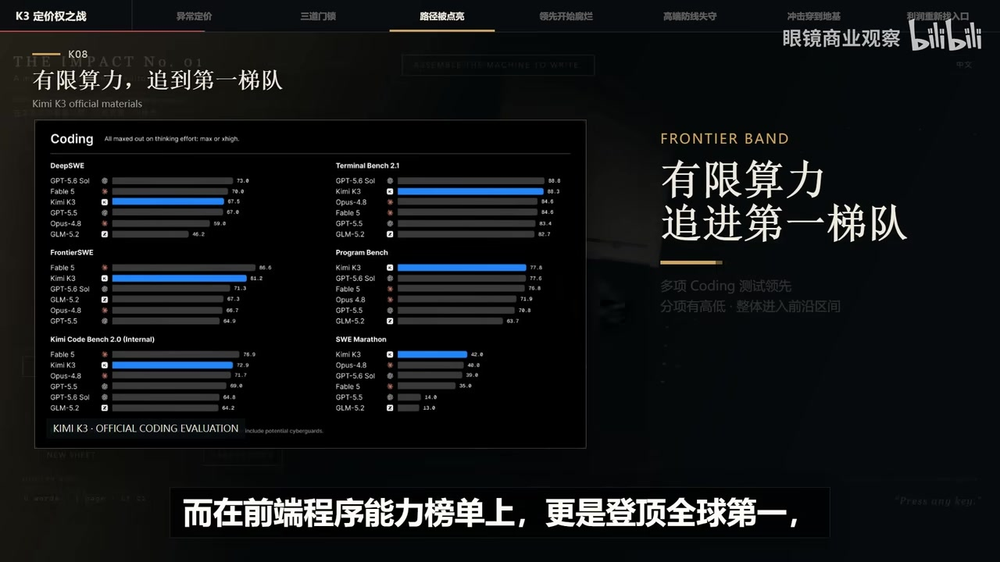
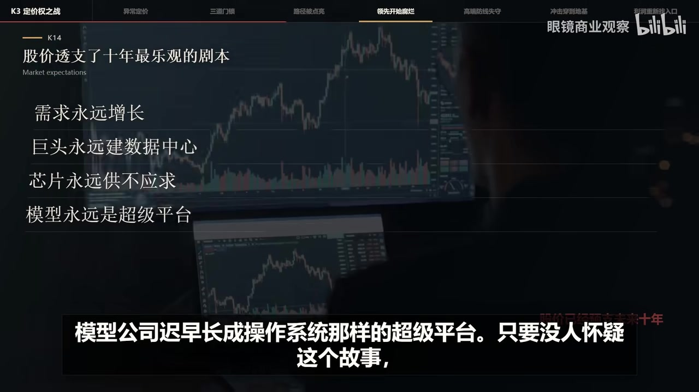
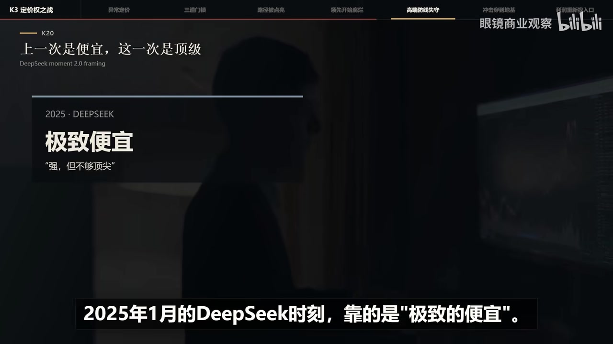
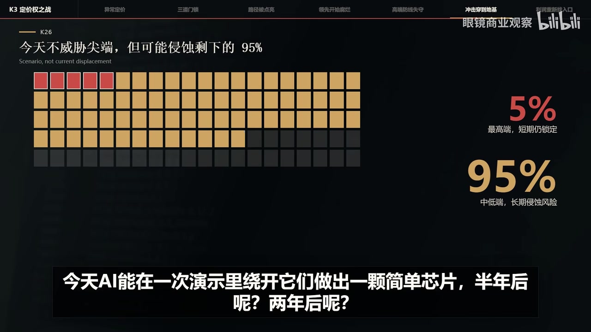

原视频讲述 · 第 1 部分
00:00Hello, 大家好，今天我们加更一期继续聊 Kimi 上一期我们聊的 k 米的发展史，今天只聚焦一件事，为什么 k 米会让全球股市和科技界有如此大的震动？简单回顾下，上周月之暗面发布了新模型 k 米 K3，它能力追上了美国最顶尖的那一批 AI 模型，使用成本大约只有美国旗舰产品的一半，而且宣布开源。隔夜美国股市的科技板块大跌，衡量芯片行业的费城半导体指数从高点跌掉了超过20%，按华尔街的定义正式进入熊市，英伟达市值第一的宝座一度被苹果抢走。先说结论，过去像 OpenAI 这样的前沿闭源巨头，之所以能支撑起接近万亿美元的估值，是因为他们向资本市场兜售了一种排他性神话。
00:45资本认为，要造出一线的模型，必须同时具备三个条件，富可敌国的资金、不可复制的神级团队以及上百万张最新代际的算力芯片。在这种技术断层下，巨头拥有绝对的定价权，其估值本质上是垄断溢价。但 k 米 K3正伪了这个神话，月之暗面。全公司几百人，规模不及硅谷大厂的一个部门。由于出口管制，它也没有太多芯片，更别说最先进的芯片，按照美国的标准，这种配置连牌桌都上不去。算力不够怎么办？他们启用了一个2024年才出现的新算法叫米网，同样的算力，它能把每一份训练数据的利用效率炸出大约2倍，代价是这个新算法在万亿参数训练过程中会失控。
01:30他们的解法工程上加了很多优化，解决了失控问题，成果做出了 K 2模型，而在 K3模型训练里又加了很多优化。就靠这些工程上的优化，他用有限的算力把能力追到了全球第一梯队。而在前端程序能力榜单上，更是登顶全球第一，把美国 anthropic 和 OpenAI 的闭源旗舰模型都甩在身后，在科学探索和工程作战里，最贵最折磨人的是这条路到底走不走得通，这个概念叫存在性证明。当年 OpenAI 压注 transformer，拿预测下一个单词去赌通用智能，没人知道这条路走下去能不能产生高水平的智能，那是压上全公司命运的赌博，结果他赌赢了，他一赢全世界都知道这条路能走通，剩下的就是找算力，找数据。

02:16照着做门槛。当然也有不是谁都能做，但全世界聪明人那么多，能做的着实不少，这就是为什么2022年底拆 g 发布之前没几家做大模型的，2023年之后一下冒出来几十家。而 k 等于是替所有人省掉了很多试错大模型，这行一个盲目的方向能浪费数亿甚至数十亿的算力，现在 K3拿着标准的 transformer、精简的数据和自研的优化算法冲上一线，等于给全行业发了一个最明确的信号。这条路通，而且上限很高，后发团队不用抄他的代码，只要知道有人走通过，就敢放心重组自己的方案。
02:56同样的钱能干五倍甚至10倍的活。一句话，k 米在资源受限的条件下完成了一次存在性证明，不需要千亿美元保障，这个配方也能做出媲美一线碧源的模型。再来说股市，其实在 K3发布之前，AI 和半导体板块就已经在承压，过去几年涨得实在太多，股价里早就不只是今天的利润，而是提前透支了。未来十年最乐观的剧本需求永远高速增长，巨头永远在建数据中心，芯片永远供不应求，模型公司迟早长成操作系统那样的超级平台，只要没人怀疑这个故事，股价就能接着涨，但最近，怀疑已经开始了。微软、亚马逊、谷歌、meta 每年还要砸多少钱，这些钱什么时候变成收入 AI 产品一直在降价，利润跟不跟得上，英伟达的芯片现在还是供不应求。

03:46但三年、五年后呢，这些问题早就摆在那儿，只是缺一个导火索把它们串到一起，米 K3正好落在这个节骨眼上。市场原来的担心是美国公司在 AI 上是不是花钱太多了，K3出来之后，问题变成了美国公司花上千亿美元买来的领先还能维持多久？最近我也看到不少人说，K3其实没那么神，这个榜单不如谁，那个指标不如谁，token 效率也不够高。说实话我挺怀疑这些人到底深度用过没有，至少在我这儿 K3的水平是在线的，而且退一万步讲，他是不是真到了某个榜单的世界第一没那么重要。
原视频讲述 · 第 2 部分
04:24金融市场关心的从来不是今天的排名，而是趋势。K3给出的趋势是顶级模型之间的差距缩的比所有人预想都快。一家公司砸巨资把模型推到最前沿。一个月后有人追评，再过两个月，开源也赶上了领先的保质期，越来越短，对用户这当然是好事，模型更强、更便宜，选择更多，但对模型公司，这是一种非常难受的生意，投入越来越大，换来的领先却越来越短。智能越强，社会受益越多，可智能越容易得到生产，智能这件事本身反而越不赚钱，所以华尔街现在怀疑的并不是 AI 还能不能改变世界，他怀疑的是训练大模型到底还是不是一门那么赚钱的生意。

05:08摩根馆这次叫 deep 时刻2.0，但这次和上次不一样，2025年1月的 deep 时刻靠的是极致的便宜。当时华尔街还能编一套叙事安慰自己，中国模型是强但不够顶尖，只能靠低价打中低端市场，高端推理和最肥的利润还是我们的。这一次，这道心理防线被 K3直接击碎了，K 三大幅提价，资本从涨价里读到的是野心和信心，我的货是顶级的，凭什么在卖白菜价，这是明摆着要去抢 OpenAI 和 anthroic 嘴里最肥的高端企业客户，而且在主流资本反应过来之前，开发者和企业早就用脚投过票了。
05:47不管一帮人怎么拿意识形态说事，污名化中国模型，干活的人是务实的，谁好用谁便宜，量大就用谁。之前的 K2.5、K2.6已经早就拿到了市场份额。过去华尔街还能假装看不见中低端的流失，现在连自己最后死守的高端大本营也快守不住了。这就是为什么经历过 deep 的洗礼。全球股市还会被 k 米再下跌一次，这场风暴甚至砸到了芯片行业最底层的公司。当天盘中跌得最惨的两个倒霉鬼是坑藤电子和新思科技，双双跌超12%。一天之内，158亿美元市值蒸发，这两家垄断着全球芯片设计软件，是华尔街眼里最稳固、最躺赚的生意。
06:28模型发布本来跟他们八竿子打不着，坏就坏在 k 米在发布会上演示了一个芯片设计任务，K3用48小时设计出一款芯片，全程绕开了这两家的一软件，平心而论，这颗 AI 设计的芯片还很原始，跟当今的尖端芯片不在一个时代，短期构不成任何商业威胁，但还是那句话，资本市场看的是趋势。今天，AI 能在一次演示里绕开它们，做出一颗简单芯片。半年后呢？两年后呢？就算最高端，那5%永远做不了，剩下95%的中低端市场被 AI 吃掉，也足够动摇这两家的根基。到这里，整条链条就清楚了，K3和1批强大的开放模型让市场意识到顶级模型的稀缺性正在消失，模型选择变多，企业溢价能力增强，基础模型的利润被压缩，模型公司赚不着大钱，科技巨头就得重新证明自己。

07:20每年几千亿美元的基建投入是值得的，一旦市场开始怀疑巨头的投入节奏，芯片、存储、网络、数据中心，所有这些公司的远期估值都要跟着动摇。一场模型发布最终演变成从模型定价权到算力回报率，再到芯片设计、底层工具的全产业链蓄事清洗。那钱最后会流到哪儿？市场现在开始找能真正留住利润的环节。可能是手握大量用户的平台，可能是绑定了企业客户的云厂商，可能是扎进具体行业，握着工作流程和专有数据的 AI 应用，也可能是能把推理成本压到最低的新型基础设施公司 k 米 K3没有让 AI 贬值，贬值的是一个旧信念，只要造出最聪明的模型，就能成为这个时代最值钱的公司。
08:07技术史一再证明，发明一种能力的人，生产这种能力的人，靠这种能力赚到最多钱的人，常常不是同一批人。AI 正在走进这个阶段，华尔街砍掉的是对模型永久稀缺的定价。接下来他要找的是，当智能变成一种便宜又普及的基础能力，谁还握着用户成本和利润的入口？资本市场失去了一个关于绝对垄断的美梦，但人类社会则可能等来了智能大爆发的前夜。感谢收看，我们下期再见。